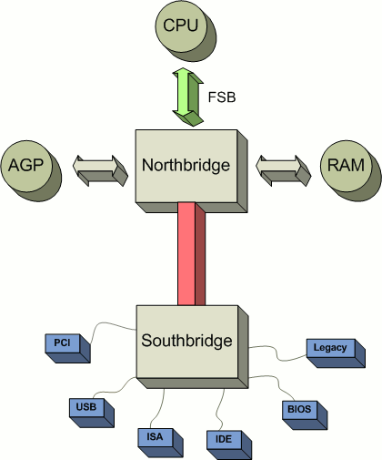
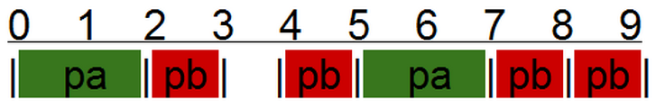
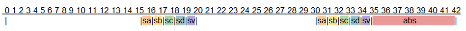

Process/Thread Scheduling#
Scheduling is the operating system activity that decides which runnable process or thread uses a CPU next. The scheduler has to balance responsiveness, fairness, throughput, and overhead. No policy optimizes all of these goals at the same time.
Kernel Mode vs. User Mode#
Kernel mode can use the full instruction set of the CPU. This includes privileged operations such as enabling and disabling interrupts, updating page table registers, and installing interrupt table pointers. Kernel mode can also modify page tables and access memory that user programs cannot access.
User mode cannot execute privileged instructions. A user-mode program can only modify memory assigned to its process, except through controlled interfaces such as system calls.
Interrupts#
An interrupt is an event that requires the CPU to stop its current flow of execution and run an interrupt handler.
The general interrupt path is:
Save CPU registers, including the program counter.
Look up the handler in the interrupt vector table.
Run the handler.
Restore registers and return to the interrupted execution point.
This structure applies to both hardware and software interrupts. Some interrupts, such as page faults, may retry the instruction that caused the interrupt.
Hardware Interrupts - PC Architecture#
{kind=link}

Hardware Interrupts - Sources#
Hardware interrupts come from devices and CPU components. Traditional PC systems routed many slower device interrupts through southbridge-related hardware. Multiprocessor systems use interrupt controllers such as APICs to route interrupts across CPUs.
Other interrupts come from faster CPU-adjacent components. The MMU raises page faults. The ALU raises exceptions such as divide by zero. The clock raises periodic timer interrupts that give the operating system a regular chance to run the scheduler.
Software Interrupts#
Operating systems use software interrupts or related CPU mechanisms to implement system calls. A user program cannot jump directly into kernel memory. Instead, it uses the system call interface, which switches into kernel mode in a controlled way.
This x86 assembly example writes “Hello World!” using the old Linux
int 0x80 system call path.
section .text
global _start
_start:
mov edx, len ; message length
mov ecx, msg ; message to write
mov ebx, 1 ; stdout
mov eax, 4 ; sys_write
int 0x80 ; software interrupt
section .data
msg db 'Hello World!',0xa
len equ $ - msg
Software interrupts are more expensive than ordinary function calls. The cost is worthwhile because the kernel boundary protects the system from ordinary program errors.
Goals of a Process Scheduler#
A scheduler policy is judged by several goals:
Fairness: each process gets a reasonable share of the CPU.
Efficiency: the CPU stays busy.
Response time: interactive work receives quick service.
Turnaround: batch jobs complete in a reasonable time.
Throughput: the system completes as many jobs as possible.
These goals conflict. A system tuned for interactive response time may not maximize throughput. A system tuned for throughput may feel less responsive to a user.
Types of Scheduling Strategies#
Common strategies include preemptive scheduling, round-robin scheduling, priority scheduling, real-time scheduling, cooperative scheduling, and run-to-completion scheduling.
Most modern general-purpose operating systems use preemptive scheduling with time sharing and priorities.
OS Support#
Older systems such as CP/M and MS-DOS were not multitasking operating systems. Windows 1.x through 3.x, classic Mac OS, and NetWare used cooperative multitasking, where programs had to yield control.
Modern systems such as Linux, BSD, Windows NT and later, macOS, VMS, and most UNIX systems use preemptive multitasking.
Types of Processes to Schedule#
Interactive processes spend much of their time waiting for user input or I/O. They often need low latency when they become runnable.
CPU-intensive processes spend most of their time ready to run. They need enough CPU time for throughput, but they can usually tolerate longer latency than interactive processes.
Preemptive Scheduling Key Terms#
A time quantum is the amount of time a process or thread can run before a scheduling decision is made. On many systems the quantum is related to clock ticks.
The clock is a hardware timer that periodically interrupts the CPU. The interrupt gives the kernel an opportunity to run scheduler code.
A context switch saves the state of one execution context and restores the state of another. Context switches can be caused by timer interrupts, system calls, blocking I/O, faults, and other events.
Process states#
A process or thread is running when it is executing on a CPU. It is ready when it can run but is not currently selected. It is not ready when it is blocked waiting for an event. It is terminated when it has exited and is being cleaned up.
Choosing a Quantum#
A shorter quantum improves responsiveness because a runnable process waits less time before getting a turn. A longer quantum improves efficiency because the system spends less time context switching.
For example, if context-switch overhead is 5 ms and the quantum is 20 ms, overhead is 20 percent. If the quantum is 50 ms, overhead drops to about 10 percent. The tradeoff is response time. With five runnable processes, a shorter quantum can reduce the time between turns.
Context Switches#
A context switch saves the state of the current process or thread and restores the state of another. The saved state includes CPU registers and the program counter. The operating system also updates process state in its process or thread tables.
Context switching - How it works#
The kernel first saves the CPU registers for the interrupted process or thread. It then marks that execution context as ready or not ready. A timer interrupt usually leaves it ready. A blocking system call usually leaves it not ready.
The scheduler then chooses a ready process or thread. The kernel restores that context’s registers and returns to user mode.
Degrees of Preemption#
Operating systems differ in how much kernel code can be preempted. Simple systems may preempt user-mode tasks but not kernel-mode tasks. Systems with preemptive kernels can interrupt more kernel activity, which can improve responsiveness.
Modern Linux, Windows NT and later, Solaris, AIX, and several BSD systems support kernel preemption to some degree.
The schedulable unit also differs. Some systems schedule processes. Others schedule threads. Linux, Windows, and macOS schedule at the thread level. Older or simpler systems may schedule only processes.
Round - Robin Process Scheduling#
Round-robin scheduling is simple. The operating system keeps a runnable list and gives each runnable process or thread a turn. On a system with multiple CPUs, several items from the runnable list may run at once.
Round robin is fair in a basic sense, but it does not account for priority, I/O behavior, or deadlines.
Scheduling with Multiple Queues#
Multiqueue schedulers separate runnable threads by priority or quantum length. Each queue can be scheduled round-robin, while the scheduler chooses higher-priority queues before lower-priority queues.
A simple version looks like this:
thread schedule(thread interruptedThread) {
let highest = 0, lowest = 9;
Queue runQueue(10);
interruptedThread.state = runnable or blocked;
queue(interruptedThread.priority).enqueue(interruptedThread);
for(int i = highest; i <= lowest; i++) {
if(queue(i) has any runnable threads) {
thread t = queue.dequeue();
t.state = running;
return t;
}
}
}
This policy can starve low-priority work if high-priority threads are always runnable. A common improvement is to temporarily boost threads that block before using their full quantum, because those threads are often interactive or I/O bound. Another improvement is to lower a thread’s temporary priority after it runs.
Real-time Schedulers#
Real-time scheduling is concerned with deadlines. A real-time task has an arrival time, a deadline, and an execution requirement. The scheduler’s main goal is to complete required work before deadlines.
A task set is schedulable when the system can meet all deadlines under the chosen policy. A simple utilization estimate is the sum of execution time divided by arrival period for each periodic task. If utilization is over 100 percent, not all work can finish on time.
For example, if task Pa needs 2 units every 5 units, and task Pb
needs 1 unit every 2 units, utilization is 2/5 + 1/2 = 90%. If a
third task needs 3 units every 5 units, utilization becomes
2/5 + 1/2 + 3/5 = 150%, which is not schedulable on one CPU.
{kind=link}

Example Real World RTS Problem#
An anti-lock braking system is a real-time scheduling problem. Wheel sensors and a vehicle speed sensor report values every 15 ms. Recording values takes 1 ms. Brake adjustment for all tires takes 6 ms.
The system needs to detect wheel slip and react before slip changes too much. If two samples and one adjustment fit inside the required response window, the task set is schedulable.
Solution to Example Real World RTS Problem#
Five sensor tasks each need 1 ms every 15 ms. Brake adjustment needs 6 ms when scheduled. Two samples can be collected in 35 ms, and adjustment brings the total to 41 ms. That is below the 50 ms slip-change window.
Utilization is approximately 1/15 + 1/15 + 1/15 + 1/15 + 1/15 + 6/35,
or 50.47 percent. This leaves enough CPU time for the required work.
{kind=link}

Types of Real-Time Scheduler Implementations#
Earliest-deadline-first scheduling chooses the runnable task with the nearest deadline. It can work well when runtime estimates and arrival rates are accurate. When utilization exceeds 100 percent, the missed deadlines may be harder to predict.
Fixed-priority scheduling always runs the highest-priority ready task. If the system is overloaded, lower-priority tasks miss deadlines first. This is often easier to reason about.
Additional Concerns in Advanced Scheduler Implementations#
Modern schedulers consider more than priority. CPU affinity matters because a thread may still have useful data in a CPU cache. Working-set residency matters because running a thread with many resident pages may avoid page faults.
NUMA also matters on machines where memory access time depends on which CPU owns a memory bank. A scheduler may prefer a CPU near the memory a thread already uses, or it may move work to balance load.
Process Priority and Scheduling in Linux#
Linux supports normal and real-time scheduling policies. Normal policies
include SCHED_OTHER, SCHED_BATCH, and SCHED_IDLE. Real-time
policies include SCHED_FIFO and SCHED_RR.
Scheduling policy can be set with:
int sched_setscheduler(pid_t pid, int policy, struct sched_param *param);
The sched_param structure includes a priority value. Real-time
policies use that priority directly. Normal policies use nice values and
other scheduler-specific rules.
Linux Real Time Scheduler#
Linux real-time processes have priority over non-real-time processes.
SCHED_FIFO uses one FIFO queue per priority. A running
SCHED_FIFO process continues until a higher-priority process becomes
runnable, the process blocks, or the process calls sched_yield().
SCHED_RR is similar, but each process has a finite quantum. When the
quantum expires, the process moves to the back of its priority queue.
Linux limits real-time CPU consumption with RLIMIT_RTTIME so a
real-time process cannot lock up the whole system indefinitely.
Linux Preemptive Scheduler#
SCHED_OTHER is the default Linux time-sharing policy. It uses nice
values as one input to prioritization.
SCHED_BATCH is similar but tells the scheduler that the process is
not interactive. SCHED_IDLE is for very low-priority work. A
SCHED_IDLE process runs only when no other normal work is runnable.
Nice Values#
UNIX systems use nice values to express process priority. The highest
priority nice value is typically -20. The lowest is typically 19.
The default is 0.
A child process inherits its parent’s nice value after fork().
Non-root users can usually increase the nice value, lowering priority.
Only root can decrease the nice value, raising priority.
Process Scheduling in Windows#
Windows uses process priority classes and thread priorities within each class. Common classes include Idle, Below Normal, Normal, Above Normal, High, and Realtime.
Within normal classes, work time-shares according to priority. Idle work runs only when no higher-priority work is runnable. Realtime work can run ahead of ordinary work and must be used carefully.
Windows also considers NUMA and processor groups on large systems. Multimedia Class Scheduler Service reserves CPU capacity for workloads such as audio and video.
User-Mode Schedulers#
User-mode schedulers manage user-level threads without asking the kernel to schedule each one independently. They may map many user threads onto one process or onto a smaller number of kernel threads.
Examples include Windows fibers, Windows User-Mode Scheduling, GNU Pth,
and custom schedulers built with stack-switching mechanisms such as
setjmp() and longjmp().
User-Mode Threads: Why?#
User-mode threads are useful on systems without kernel-thread support. They are also useful when an application needs a large number of logical threads and most of them are not CPU-bound.
Creating and destroying user-mode threads is usually cheaper than creating and destroying kernel threads. Systems such as Erlang benefit from this model because they can expose many lightweight concurrent activities without requiring one kernel thread per activity.
User-Mode Threads: Why Not?#
User-mode threads have less true parallelism. Ten user threads on one kernel thread still run on one CPU at a time.
The kernel also cannot schedule user-mode threads individually. It does not know their CPU usage, memory behavior, or blocking state. If one user thread blocks in a normal system call, it can block the kernel thread that carries the other user threads.
User-mode threads can work well for I/O-bound or interactive workloads when the threading library uses nonblocking or asynchronous I/O. They are usually a poor fit for CPU-bound parallel computation.
GNU - Pth - User Mode Pthreads#
GNU Pth provides a user-mode threading library with an API that resembles
POSIX threads. Because the threads are scheduled in user mode, I/O-bound
programs need Pth-aware calls such as pth_accept(), pth_write(),
and pth_sleep().
1#include <stdio.h>
2#include <pth.h>
3#include <string.h>
4#include <stdlib.h>
5#include <netdb.h>
6#include <unistd.h>
7
8static void *handler(void *_arg)
9{
10 int fd = *((int*)_arg);
11 time_t now;
12 char *ct;
13
14 now = time(NULL);
15 ct = ctime(&now);
16 pth_write(fd, ct, strlen(ct));
17 close(fd);
18 return NULL;
19}
20
21static void *ticker(void *_arg)
22{
23 time_t now;
24 char *ct;
25 float load;
26
27 for (;;)
28 {
29 pth_sleep(5);
30 now = time(NULL);
31 ct = ctime(&now);
32 ct[strlen(ct)-1] = '\0';
33 pth_ctrl(PTH_CTRL_GETAVLOAD, &load);
34 printf("ticker: time: %s, average load: %.2f\n", ct, load);
35 }
36 return NULL;
37}
38
39int main(int argc, char *argv[])
40{
41 pth_attr_t attr;
42 struct sockaddr_in sar;
43 struct protoent *pe;
44 struct sockaddr_in peer_addr;
45 socklen_t peer_len;
46 int sa, sw;
47 int port;
48
49 pth_init();
50 port = atoi(argv[1]);
51 signal(SIGPIPE, SIG_IGN);
52
53 attr = pth_attr_new();
54 pth_attr_set(attr, PTH_ATTR_NAME, "ticker");
55 pth_attr_set(attr, PTH_ATTR_STACK_SIZE, 32*1024);
56 pth_attr_set(attr, PTH_ATTR_JOINABLE, FALSE);
57 pth_spawn(attr, ticker, NULL);
58
59 pe = getprotobyname("tcp");
60 sa = socket(AF_INET, SOCK_STREAM, pe->p_proto);
61 sar.sin_family = AF_INET;
62 sar.sin_addr.s_addr = INADDR_ANY;
63 sar.sin_port = htons(port);
64 bind(sa, (struct sockaddr *)&sar, sizeof(struct sockaddr_in));
65 listen(sa, 10);
66
67 pth_attr_set(attr, PTH_ATTR_NAME, "handler");
68 for (;;)
69 {
70 sw = pth_accept(sa, (struct sockaddr *)&peer_addr, &peer_len);
71 pth_spawn(attr, handler, (void *)&sw);
72 }
73
74 return 0;
75}
Key points:
pth_init()initializes the user-mode threading runtime.pth_spawn()creates lightweight user-mode threads.The ticker thread sleeps with
pth_sleep()so the Pth scheduler can run other user threads.The server accepts clients with
pth_accept()rather than blocking the whole process in ordinaryaccept().pth_write()writes to the client connection without bypassing the user-mode scheduler.
PThreads - Kernel Threads#
Most POSIX-compliant systems provide pthreads. In Linux, pthreads are
implemented with kernel threads created through clone().
The examples in systems-code-examples/llnl_pthreads_examples are
adapted from the LLNL POSIX Threads Programming tutorial and updated to
build with this repository.
Note
I ported these examples from the LLNL HPC Tutorials POSIX Threads Programming tutorial. LLNL notes that the original tutorial is no longer supported and remains available for archival purposes. [1]
Basic pthread creation#
1/* adapted from LLNL pthreads tutorial
2 * https://computing.llnl.gov/tutorials/pthreads
3 */
4
5#include <pthread.h>
6#include <stdio.h>
7#include <stdlib.h>
8#include <unistd.h>
9
10#define NUM_THREADS 5
11
12struct thread_data
13{
14 long tid;
15 long square;
16};
17
18typedef struct thread_data thread_data_t;
19
20
21
22void *PrintHello(void *td_ptr)
23{
24 thread_data_t *td = (thread_data_t *)td_ptr;
25 printf("Hello World! It's me, thread #%ld!\n", td->tid);
26 printf("sqr(%ld) = %ld\n", td->tid, td->square);
27 pthread_exit(NULL);
28}
29
30int main (int argc, char *argv[])
31{
32 pthread_t threads[NUM_THREADS];
33 thread_data_t thread_data[NUM_THREADS];
34 int rc;
35 long t;
36 for(t=0; t<NUM_THREADS; t++)
37 {
38 thread_data[t].tid = t;
39 thread_data[t].square = t * t;
40 printf("In main: creating thread %ld\n", t);
41 rc = pthread_create(&threads[t], NULL, PrintHello, &thread_data[t]);
42 if (rc)
43 {
44 printf("ERROR; return code from pthread_create() is %d\n", rc);
45 exit(-1);
46 }
47 }
48
49 /* Last thing that main() should do */
50 printf("Exiting main thread\n");
51 pthread_exit(NULL);
52}
Key points:
pthread_create()starts each worker thread.Each thread receives a pointer to a separate
thread_data_tentry.The worker casts the
void*argument back to the expected type.pthread_exit(NULL)exits the calling thread without terminating the whole process.The main thread calls
pthread_exit(NULL)so the process stays alive until the worker threads finish.
Joinable pthreads#
1/* adapted from LLNL pthreads tutorial
2 * https://computing.llnl.gov/tutorials/pthreads
3 */
4
5#include <pthread.h>
6#include <stdio.h>
7#include <stdlib.h>
8
9#define NUM_THREADS 5
10
11struct thread_data
12{
13 long tid;
14 long square;
15};
16
17typedef struct thread_data thread_data_t;
18
19
20
21void *PrintHello(void *td_ptr)
22{
23 thread_data_t *td = (thread_data_t *)td_ptr;
24 printf("Hello World! It's me, thread #%ld!\n", td->tid);
25 printf("sqr(%ld) = %ld\n", td->tid, td->square);
26 pthread_exit(NULL);
27}
28
29int main (int argc, char *argv[])
30{
31 pthread_t threads[NUM_THREADS];
32 thread_data_t thread_data[NUM_THREADS];
33 pthread_attr_t attr;
34 void* status;
35
36 int rc;
37 long t;
38
39 pthread_attr_init(&attr);
40 pthread_attr_setdetachstate(&attr, PTHREAD_CREATE_JOINABLE);
41
42 for(t=0; t<NUM_THREADS; t++)
43 {
44 thread_data[t].tid = t;
45 thread_data[t].square = t * t;
46 printf("In main: creating thread %ld\n", t);
47 rc = pthread_create(&threads[t], &attr, PrintHello, &thread_data[t]);
48 if (rc)
49 {
50 printf("ERROR; return code from pthread_create() is %d\n", rc);
51 exit(-1);
52 }
53 }
54
55 pthread_attr_destroy(&attr);
56
57 for(t=0; t<NUM_THREADS; t++)
58 {
59 rc = pthread_join(threads[t], &status);
60 if (rc)
61 {
62 printf("ERROR; return code from pthread_join() is %d\n", rc);
63 exit(-1);
64 }
65 printf("Main: completed join with thread %ld having a status of %ld\n",t,(long)status);
66 }
67
68 /* Last thing that main() should do */
69 printf("Exiting main thread\n");
70 pthread_exit(NULL);
71}
Key points:
The thread attributes are configured with
PTHREAD_CREATE_JOINABLE.pthread_join()waits for each thread to finish.Joining gives the main thread a synchronization point.
pthread_attr_destroy()releases the attribute object after thread creation.This version makes thread lifetime explicit.
Condition variable preview#
Condition variables are covered in more detail in the mutual exclusion chapter. This example appears here because it shows how scheduled threads can block and wake based on shared state.
1#include <pthread.h>
2#include <stdio.h>
3#include <stdlib.h>
4#include <unistd.h>
5
6#define NUM_THREADS 3
7#define TCOUNT 10
8#define COUNT_LIMIT 12
9
10int count = 0;
11int thread_ids[3] = {0,1,2};
12pthread_mutex_t count_mutex;
13pthread_cond_t count_threshold_cv;
14
15void *inc_count(void *t)
16{
17 int i;
18 long my_id = (long)t;
19
20 for (i=0; i<TCOUNT; i++)
21 {
22 pthread_mutex_lock(&count_mutex);
23 count++;
24
25 /*
26 Check the value of count and signal waiting thread when condition is
27 reached. Note that this occurs while mutex is locked.
28 */
29 if (count == COUNT_LIMIT)
30 {
31 pthread_cond_signal(&count_threshold_cv);
32 printf("inc_count(): thread %ld, count = %d Threshold reached.\n",
33 my_id, count);
34 }
35 printf("inc_count(): thread %ld, count = %d, i = %d, unlocking mutex\n",
36 my_id, count, i);
37 pthread_mutex_unlock(&count_mutex);
38
39 /* Do some "work" so threads can alternate on mutex lock */
40 sleep(1);
41 }
42 pthread_exit(NULL);
43}
44
45void *watch_count(void *t)
46{
47 long my_id = (long)t;
48
49 printf("Starting watch_count(): thread %ld\n", my_id);
50
51 /*
52 Lock mutex and wait for signal. Note that the pthread_cond_wait
53 routine will automatically and atomically unlock mutex while it waits.
54 Also, note that if COUNT_LIMIT is reached before this routine is run by
55 the waiting thread, the loop will be skipped to prevent pthread_cond_wait
56 from never returning.
57 */
58 pthread_mutex_lock(&count_mutex);
59 while (count<COUNT_LIMIT)
60 {
61 pthread_cond_wait(&count_threshold_cv, &count_mutex);
62 printf("watch_count(): thread %ld Condition signal received.\n", my_id);
63 }
64 count += 125;
65 printf("watch_count(): thread %ld count now = %d.\n", my_id, count);
66 pthread_mutex_unlock(&count_mutex);
67 pthread_exit(NULL);
68}
69
70int main (int argc, char *argv[])
71{
72 int i, rc;
73 long t1=1, t2=2, t3=3;
74 pthread_t threads[3];
75 pthread_attr_t attr;
76
77 /* Initialize mutex and condition variable objects */
78 pthread_mutex_init(&count_mutex, NULL);
79 pthread_cond_init (&count_threshold_cv, NULL);
80
81 /* For portability, explicitly create threads in a joinable state */
82 pthread_attr_init(&attr);
83 pthread_attr_setdetachstate(&attr, PTHREAD_CREATE_JOINABLE);
84 pthread_create(&threads[0], &attr, watch_count, (void *)t1);
85 pthread_create(&threads[1], &attr, inc_count, (void *)t2);
86 pthread_create(&threads[2], &attr, inc_count, (void *)t3);
87
88 /* Wait for all threads to complete */
89 for (i=0; i<NUM_THREADS; i++)
90 {
91 pthread_join(threads[i], NULL);
92 }
93 printf ("Main(): Waited on %d threads. Done.\n", NUM_THREADS);
94
95 /* Clean up and exit */
96 pthread_attr_destroy(&attr);
97 pthread_mutex_destroy(&count_mutex);
98 pthread_cond_destroy(&count_threshold_cv);
99 pthread_exit(NULL);
100
101}
102
Key points:
Two incrementing threads update a shared
count.A watching thread waits until
countreachesCOUNT_LIMIT.pthread_cond_wait()releases the mutex while the thread waits and reacquires it before returning.pthread_cond_signal()wakes a waiting thread when the condition is reached.The scheduler can run other threads while the watcher is blocked.
C# Thread Scheduling Case Study#
The systems-code-examples/threads_csharp example shows the same
scheduling ideas in a managed runtime. The runtime creates operating
system threads, and the operating system schedules them.
1using System;
2using System.Threading;
3using System.Collections.Generic;
4
5namespace threads
6{
7 //begin-class-ParallelComputation
8 public class ParallelComputationWorkItem {
9 public readonly long LowerBound;
10 public readonly long UpperBound;
11 public readonly long Number;
12 public readonly ICollection<long> Divisors;
13 public ParallelComputationWorkItem(long lower, long upper, long number, ICollection<long> divisors) {
14 LowerBound = lower;
15 UpperBound = upper;
16 Number = number;
17 Divisors = divisors;
18 }
19 }
20
21 public class ParallelComputation {
22
23 public void PrintFactors(long number) {
24 var threads = new List<Thread>();
25 var divisors = new List<long> ();
26 var cpuCount = Environment.ProcessorCount;
27 long lower = 1;
28 for (var i = 0; i < cpuCount; i++) {
29 var thread = new Thread (Worker);
30 var upper = lower + (number / cpuCount);
31 thread.Start(new ParallelComputationWorkItem(lower, upper, number, divisors));
32 threads.Add (thread);
33 lower = upper;
34 }
35 foreach (var thread in threads) {
36 thread.Join ();
37 }
38 Console.WriteLine ("Divisors - ");
39 foreach (var divisor in divisors) {
40 Console.WriteLine (divisor);
41 }
42 }
43
44 private void Worker(object args) {
45 var workItem = (ParallelComputationWorkItem)args;
46 for (var i = workItem.LowerBound; i < workItem.UpperBound; i++) {
47 if (workItem.Number % i == 0) {
48 lock (workItem.Divisors) {
49 workItem.Divisors.Add (i);
50 }
51 }
52 }
53 }
54 }
55 //end-class-ParallelComputation
56}
Key points:
The program creates one worker thread per processor reported by the runtime.
Each worker receives a numeric range to search for divisors.
Thread.Start()begins execution of the worker method.Thread.Join()waits for every worker before printing results.lockprotects the shared divisor list while workers add results.